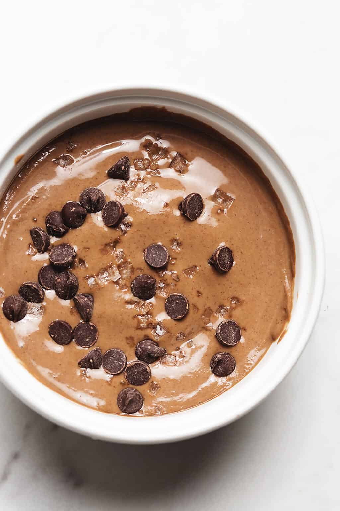

Recipe for Protein Pudding
This protein pudding is thick so it sticks with you for a while, only uses 4 ingredients, and can be ready in just a few minutes! You can use different flavors of protein powder for different high protein desserts!
BACK

Ingredients
- 3/4 cup water or almond milk
- 1 serving protein powder
- 1.5 tablespoons chia seeds
- 1 tablespoon cocoa powder (only if making chocolate pudding)
- 1 tablespoon chocolate chips
Instructions
- Add all ingredients to a blender jar or magic bullet, making sure to add the liquid first. Blend until the chia seeds are completely blended and a thick mixture forms.
- Serve immediately or let chill in the refrigerator for 1 hour.
- Top with chocolate chips (optional)